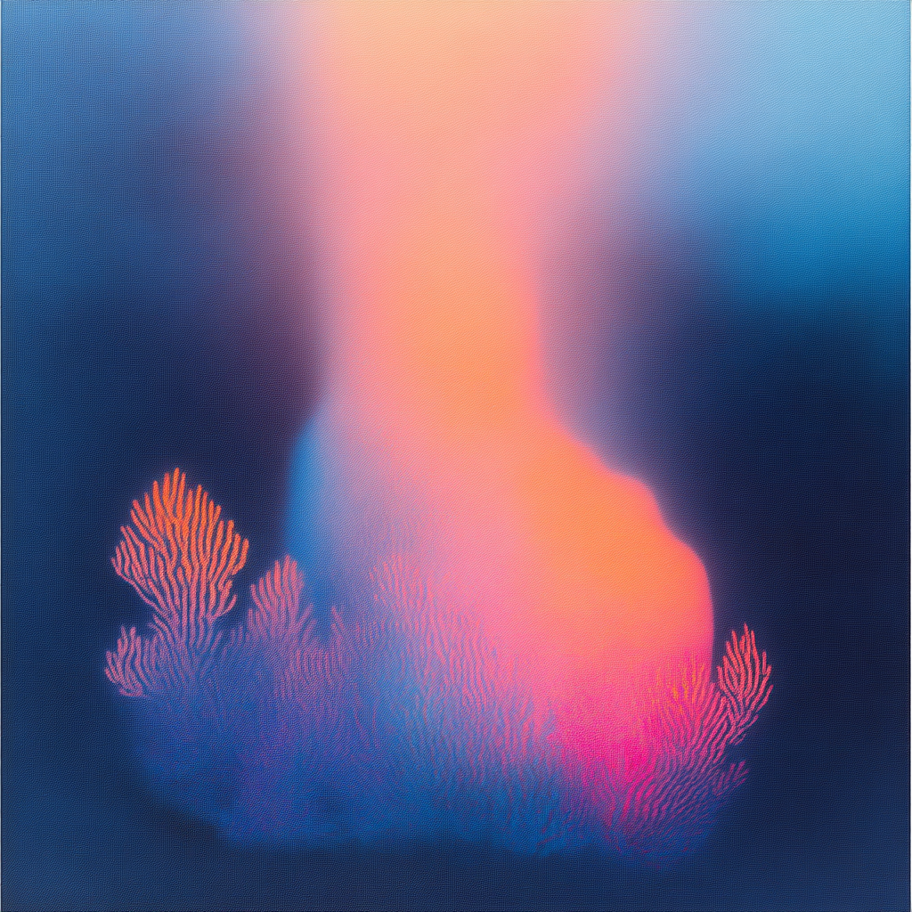

次世代の分散型ソーシャルメディア
Coralは、真のつながりと意味のある交流を実現する新しいソーシャルプラットフォームです。広告なし、AIフリー、そして実際のコミュニティとの連携を重視しています。
分散型プラットフォーム
マストドンと同じプロトコルを採用し、異なるプラットフォーム間での自由な交流を実現。データの主権は常にユーザーの手に。
広告フリー体験
広告やスポンサーコンテンツに邪魔されることなく、純粋な交流に集中できる環境を提供します。
人間中心の設計
AIの投稿を制限し、本物の人間同士の意味のある対話と関係構築を促進します。
Coralが実現する新しいコミュニケーション

意味のある交流
AIではなく、実際の人間同士の交流にフォーカス。共通の興味や目的を持つユーザー同士が深い関係を築けます。
- リアルな会話と交流
- 共通の興味に基づくマッチング
- コミュニティ主導の活動

プライバシー重視
データの主権はユーザーの手に。分散型システムにより、より安全で透明性の高いプラットフォームを実現します。
- エンドツーエンドの暗号化
- データポータビリティ
- 透明性のある運営
プロソーシャルメディアの特徴
プロジェクトベースの参加
興味のあるプロジェクトに直接参加し、実際のアクションにつながる交流を実現します。
ローカルコミュニティ
オンラインの繋がりを実際の地域コミュニティの活動に発展させ、より深い関係性を築きます。
カスタマイズ可能なサーバー
興味や目的に応じて最適なサーバーを選択し、ニッチなコミュニティでの交流が可能です。
社会貢献の促進
オープンコーラルネットワークを通じて、社会貢献活動への参加を容易にします。
よくある質問
Coralはどのように収益を得ているのですか？
広告に頼らないビジネスモデルを採用し、プレミアム機能のサブスクリプションとコミュニティサポートによって運営されています。
他のSNSとの違いは何ですか？
分散型システム、広告なしの体験、AIの制限、そしてローカルコミュニティとの連携が主な特徴です。実際の行動につながる交流を重視しています。
どのようにしてコミュニティに参加できますか？
興味のある分野やプロジェクトを選択し、関連するサーバーに参加することで、同じ興味を持つユーザーとの交流が始まります。
新しいソーシャルメディアの形を体験しませんか？
広告なし、AIフリー、そして実際のコミュニティとの繋がりを重視したプラットフォームで、本当の意味でのソーシャルネットワーキングを始めましょう。
100+
アクティブコミュニティ
1000+
進行中のプロジェクト
50+
連携サーバー